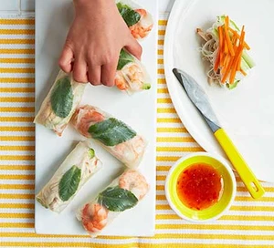

RICE PAPER Rolls

Ready rice paper rolls
Make these rice paper wraps for an easy snack or apetizer.
Kids will love them and they're wholesome, too, filled with plenty of protein and veg
Ingredients
- 50g rice vermicelli noodles
- 1 carrot peeled
- 1 avocado peeled and destoned
- ¼ cucumber
- 8 rice paper wraps
- 8 king prawns peeled and cooked
- 8 mint leaves
- ½ cooked chicken breast, shredded
- sweet chilli sauce to serve
Steps to prepare/method
Step 1
- Put the noodles in a pan of water and bring to the boil,
- simmer for 3 mins, then cool under running water.
- Drain thoroughly.
Step 2
- Cut the carrot into matchsticks using a knife or a mandoline.
- Cut the avocado into strips and the cucumber into thin sticks.
- Soak 2 of the rice paper wraps in cold water for 1-2 mins until floppy.
Step 3
- Lift 1 sheet of rice paper out of the water, shake gently, then lay it carefully on a board
- Place 2 prawns in the centre, with a mint leaf between them.
- Add a strip of avocado, pile some noodles on top, then add a layer of carrot and cucumber.
- Fold the bottom half of the rice paper over, then fold the sides in and tightly roll it up
- Repeat using the second wrapper and soak 2 more to make 2 more rolls.
Step 4
- CMake the rest of the rolls up using the remaining 4 wraps and the shredded chicken instead of prawns.
- Serve the rolls with the sweet chilli sauce for dipping.
Home